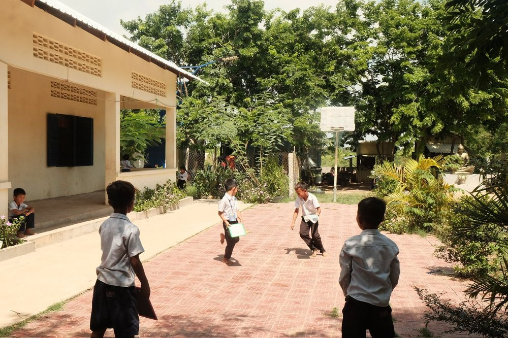
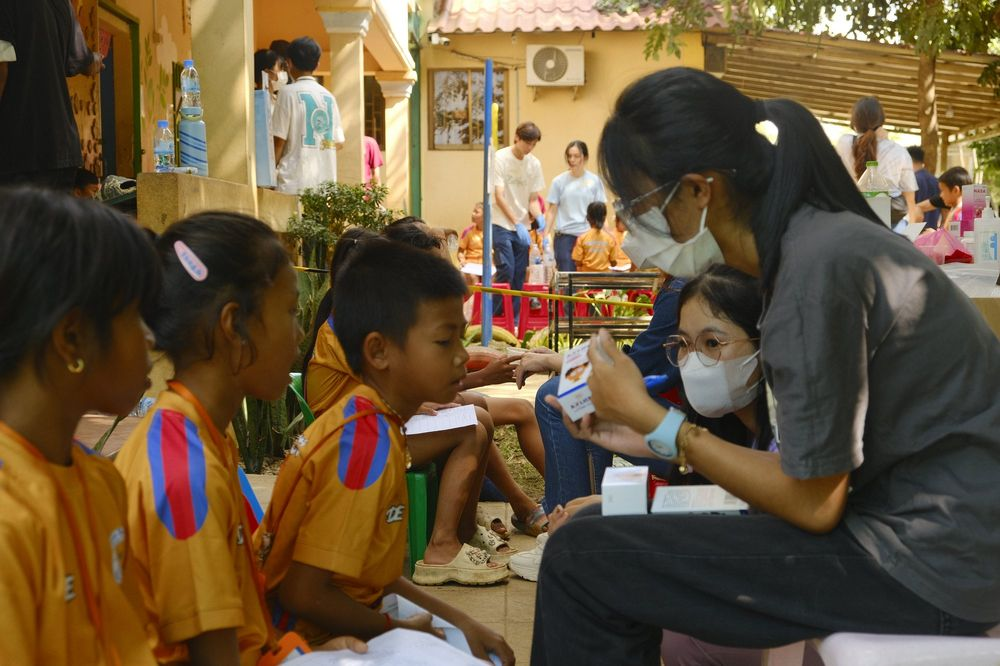
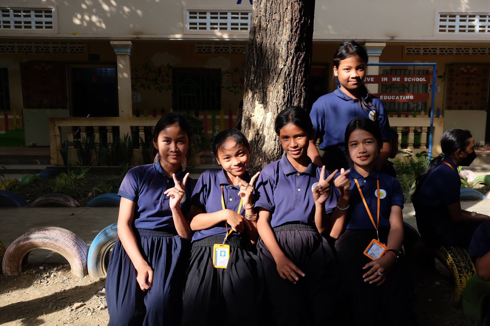
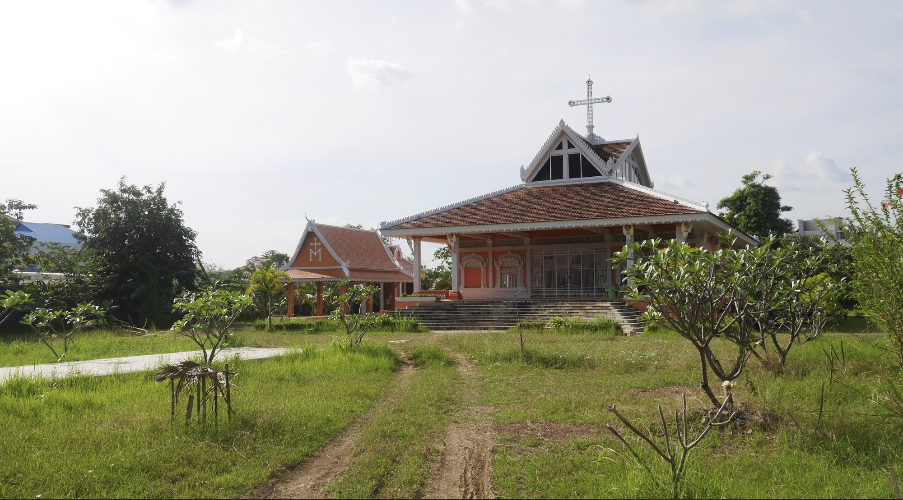

Post-Trip Reports
In the spirit of transparency and accountability, we publish annual post-trip reports detailing screening metrics, financial distributions, and project evaluations.

2026 May Recce Post Trip Report
Groundwork assessment report covering Phnom Penh stakeholder engagement, hospital visits, pharmacy research, and Koh Dach Island site exploration.
View Full Report (PDF)
2024 Post Trip Report
Comprehensive trip report detailing mass village health screening statistics (1,068 villagers screened), LADS scholarship camps, and school support in Poipet.
View Full Report (PDF)
2023 Post Trip Report
Post-trip evaluation of primary care health screenings, chronic disease follow-up referrals, and student volunteer activities.
View Full Report (PDF)
2022 Post Trip Report
Post-trip report documenting the resumption of ground operations, health education workshops, and local partner engagement.
View Full Report (PDF)Previous Post-Trip Reports
Archived documentation from our inaugural screening missions (2016 – 2019).